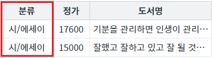
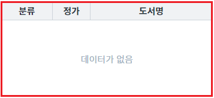
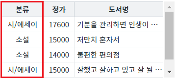

[DataList] 컬럼 데이터에 필터 적용하기 - 데이터 문자열 검색
1개요
DataList의 컬럼 데이터에 필터를 적용하는 예제입니다. 이 예제는 함수 'setColumnFilter'의 첫 번째 인자의 속성 'type' 설정 값을 'row'로 지정한 예시입니다. 속성 'type'의 설정 값이 'row'로 지정되면 다음과 같은 방법으로 데이터를 검색합니다. 검색 대상 데이터를 문자열로 변경한 후, 비교 연산 '===' 또는 함수 'indexOf'를 호출하여 반환값이 -1보다 큰지의 여부로 결정됩니다.
필터를 적용할 컬럼에 조건이 2가지 이상인 경우 'type'을 'regExp' 또는 'func'로 지정하여 구현하는 것이 속도 개선에 도움이 됩니다.
2구현된 기능
컬럼 '분류'에 필터 적용 - 데이터가 '인문'과 일치한 경우
컬럼 '분류'에 필터 적용 - 데이터 중 '에세이'가 포함된 경우
컬럼 '분류'에 필터 적용 - 데이터가 '에세이'와 일치한 경우
컬럼 '분류'에 필터 적용 - 데이터가 '소설'과 일치하거나 '에세이'가 포함된 경우
3예제 테스트 방법
3.1공통 버튼 설명
버튼 DataList의 데이터 초기화
기능 : DataList에 적용된 필터를 모두 해제하고 초기 데이터를 설정합니다.
버튼 DataList의 필터 전체 해제
기능 : DataList에 적용된 필터를 모두 해제합니다.
3.2컬럼 '분류'에 필터 적용 - 데이터가 '인문'과 일치한 경우
STEP 1. 초기 상태 확인하기
필터를 적용할 DataList와 GridView와 연결되어 있습니다. GridView를 통해 필터가 적용된 데이터를 확인할 수 있습니다. 초기 상태는 필터가 적용되지 않은 상태입니다.
그림 1.브라우저(Chrome) 실행 예시

STEP 2. 컬럼 '분류'에 필터를 적용합니다.
버튼 컬럼 '분류'에 필터 적용 - 데이터가 '인문'과 일치을 클릭합니다.STEP 3. 실행된 결과를 확인합니다.
컬럼 '분류'의 데이터가 '인문'과 일치하는 데이터가 출력됩니다.
그림 2.브라우저(Chrome) 실행 예시

영역 [로그 확인]에 출력된 로그를 확인합니다.
(브라우저의 개발자 도구 콘솔에도 로그가 출력되며, 객체 형식으로 확인할 수 있습니다.)
필터 조건이 담긴 JSON을 확인할 수 있습니다.로그
[07:48:41] # 컬럼 '분류'에 필터 적용 - 데이터가 '인문' | 필터 조건
[07:48:41] {
"type": "row",
"colIndex": "categoryLabel",
"key": "인문",
"exactMatch": true,
"condition": "and"
}3.3컬럼 '분류'에 필터 적용 - 데이터 중 '에세이'가 포함된 경우
STEP 1. 초기 상태 확인하기
필터를 적용할 DataList와 GridView와 연결되어 있습니다. GridView를 통해 필터가 적용된 데이터를 확인할 수 있습니다. 초기 상태는 필터가 적용되지 않은 상태입니다.
그림 3.브라우저(Chrome) 실행 예시
STEP 2. 컬럼 '분류'에 필터를 적용합니다.
버튼 컬럼 '분류'에 필터 적용 - 데이터 중 '에세이'가 포함을 클릭합니다.STEP 3. 실행된 결과를 확인합니다.
컬럼 '분류'의 데이터에 '에세이'가 포함되는 데이터가 출력됩니다.
그림 4.브라우저(Chrome) 실행 예시

영역 [로그 확인]에 출력된 로그를 확인합니다.
(브라우저의 개발자 도구 콘솔에도 로그가 출력되며, 객체 형식으로 확인할 수 있습니다.)
필터 조건이 담긴 JSON을 확인할 수 있습니다.로그
[08:00:22] # 컬럼 '분류'에 필터 적용 - 데이터 중 '에세이'가 포함 | 필터 조건
[08:00:22] {
"type": "row",
"colIndex": "categoryLabel",
"key": "에세이",
"exactMatch": false,
"condition": "and"
}3.4컬럼 '분류'에 필터 적용 - 데이터가 '에세이'와 일치한 경우
STEP 1. 초기 상태 확인하기
필터를 적용할 DataList와 GridView와 연결되어 있습니다. GridView를 통해 필터가 적용된 데이터를 확인할 수 있습니다. 초기 상태는 필터가 적용되지 않은 상태입니다.
그림 5.브라우저(Chrome) 실행 예시
STEP 2. 컬럼 '분류'에 필터를 적용합니다.
버튼 컬럼 '분류'에 필터 적용 - 데이터가 '에세이'와 일치을 클릭합니다.STEP 3. 실행된 결과를 확인합니다.
컬럼 '분류'의 데이터가 '에세이'와 일치하는 데이터가 없기 때문에 데이터가 출력되지 않습니다.
그림 6.브라우저(Chrome) 실행 예시

영역 [로그 확인]에 출력된 로그를 확인합니다.
(브라우저의 개발자 도구 콘솔에도 로그가 출력되며, 객체 형식으로 확인할 수 있습니다.)
필터 조건이 담긴 JSON을 확인할 수 있습니다.로그
[08:04:20] # 컬럼 '분류'에 필터 적용 - 데이터가 '에세이'와 일치 | 필터 조건
[08:04:20] {
"type": "row",
"colIndex": "categoryLabel",
"key": "에세이",
"exactMatch": true,
"condition": "and"
}3.5컬럼 '분류'에 필터 적용 - 데이터가 '소설'과 일치하거나 '에세이'가 포함된 경우
STEP 1. 초기 상태 확인하기
필터를 적용할 DataList와 GridView와 연결되어 있습니다. GridView를 통해 필터가 적용된 데이터를 확인할 수 있습니다. 초기 상태는 필터가 적용되지 않은 상태입니다.
그림 7.브라우저(Chrome) 실행 예시
STEP 2. 컬럼 '분류'에 필터를 적용합니다.
버튼 컬럼 '분류'에 필터 적용 - 데이터가 '소설'과 일치하거나 '에세이'가 포함을 클릭합니다.STEP 3. 실행된 결과를 확인합니다.
컬럼 '분류'의 데이터가 '소설'과 일치하거나 데이터에 '에세이'가 포함된 데이터가 출력됩니다.
그림 8.브라우저(Chrome) 실행 예시

영역 [로그 확인]에 출력된 로그를 확인합니다.
(브라우저의 개발자 도구 콘솔에도 로그가 출력되며, 객체 형식으로 확인할 수 있습니다.)
필터 조건이 담긴 JSON을 확인할 수 있습니다.로그
[08:14:44] # 컬럼 '분류'에 필터 적용 - 데이터가 '소설'과 일치하거나 '에세이'가 포함
[08:14:44] 필터 조건 1
{
"type": "row",
"colIndex": "categoryLabel",
"key": "소설",
"exactMatch": true,
"condition": "and"
}
[08:14:44] 필터 조건 2
{
"type": "row",
"colIndex": "categoryLabel",
"key": "에세이",
"exactMatch": false,
"condition": "or"
}4구현 예시
4.1컬럼의 데이터를 기반으로 필터 적용하기
원하는 시점에 DataList의 함수 'setColumnFilter'를 이용하여 스크립트를 작성합니다. 함수 'setColumnFilter'의 첫 번째 인자인 JSON 형식의 필터 조건은 아래의 스크립트 예시에 작성되어 있습니다.
스크립트
// 컬럼의 필터 조건이 담긴 JSON let jsnFilterOptions = {}; // [필수] 검색 방식. 검색 대상 데이터를 문자열로 변경한 뒤 비교 연산 "===" 또는 함수 "indexOf"로 검색. jsnFilterOptions.type = "row"; // [필수] 검색 대상. 필터를 적용할 DataList의 컬럼 ID 또는 컬럼 Index jsnFilterOptions.colIndex = "categoryLabel"; // [필수] 검색 조건. 'type'에 지정된 값에 따라 할당되는 값이 다릅니다. // 이 예제에서는 'type'의 설정 값이 'row'로 검색할 문자열을 지정합니다. jsnFilterOptions.key = "인문"; // [필수] [true, false] 검색 대상 데이터와 검색 문자열과의 완전 일치 여부. 'type'의 설정 값이 'row'인 경우만 적용됩니다. // true : 검색 대상 데이터를 문자열로 변경한 후, 비교 연산 "==="으로 추출. // false : 검색 대상 데이터를 문자열로 변경한 후, 함수 "indexOf"를 호출하여 반환 값이 -1보다 큰 경우에 추출. jsnFilterOptions.exactMatch = true; // [필수] ["and", "or"] 기 적용된 필터 데이터와의 병합 조건으로 최초 필터를 적용하는 경우 "and"로 할당. // "and" : 기 적용된 필터 데이터와의 교집합 // "or" : 기 적용된 필터 데이터와의 합집합 jsnFilterOptions.condition = "and"; // DataList 'dlt_books_1'에 필터를 적용합니다. dlt_books_1.setColumnFilter(jsnFilterOptions);
5주요 API
setColumnFilter( filterOptions )
filterOptions.colIndex
filterOptions.type
filterOptions.key
filterOptions.condition
filterOptions.exactMatch
clearFilter( )
6참고 문서
[웹스퀘어5 예제 가이드] [DataList] 컬럼 데이터에 필터 적용하기 - 정규 표현식 검색
[웹스퀘어5 예제 가이드] [DataList] 컬럼 데이터에 필터 적용하기 - 함수 사용 검색
7참고 동영상
DataList - setColumnFilter
링크 : https://youtu.be/n8MHpWaVKaU